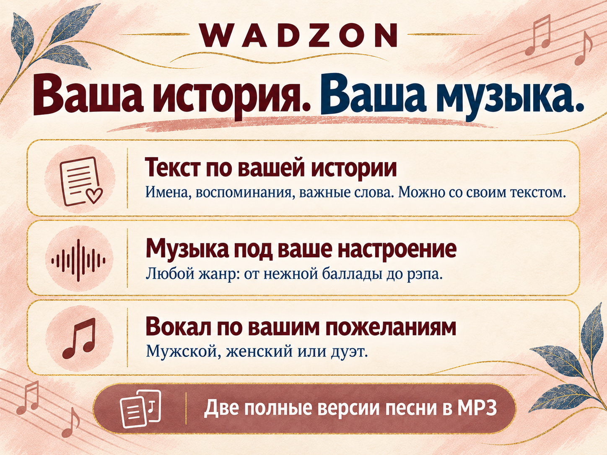
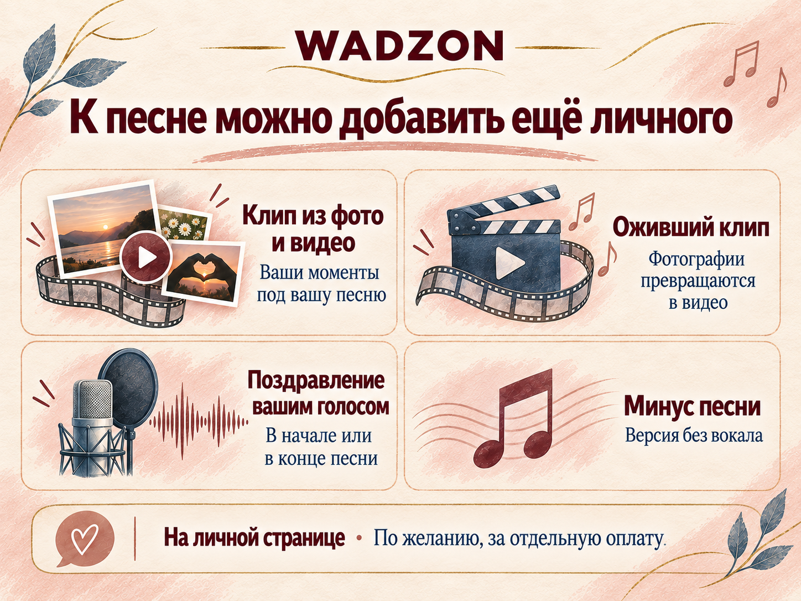

С теплом — маме
День рождения
Песня на заказ · для любимых, семьи и друзей
Подарок, в котором звучат ваши имена,
воспоминания и чувства.
Меня зовут Вадим.
С удовольствием сделаю вам песню.
Две версии · 1 490 ₽Песня по истории — оплата после прослушивания.На готовые стихи — 290 ₽ предоплаты в счёт 1 490 ₽.
▷ Послушать примеры песенУ каждой песни — свой человек
О маме. О любви. О важном дне.
Ваша песня будет про вас.
День рождения
Семья
Свадьба
Когда хочется сказать больше
День рождения, свадьба, годовщина или просто признание в любви. В песне можно сказать то, для чего трудно подобрать обычные слова.
Сделаю для вас — Вадим
Расскажите, кому посвящена песня ↗Можно просто своими словами
Имена, любимые фразы, ваши воспоминания. Поможем собрать всё важное в чате.
Прочитаете слова песни, уточните детали и внесёте пожелания до создания музыки.
Если результат понравится, оплатите 1 490 ₽ и получите оба файла песни.

За песней — ваша история
Можно рассказать о человеке своими словами: за что вы его любите, что вас связывает и какие моменты хочется вспомнить.
«Вадим очень внимательно и точно относится ко всем комментариям и правкам.»Ольга · отзыв с Авито · 21.08.2026
Ещё немного личного
Клип из ваших фотографий,
поздравление вашим голосом
и другие дополнения — по желанию.

Ваши чувства станут музыкой
Две версии песни — 1 490 ₽ на сайте.
Сначала послушаете готовые песни. Оплатите, если понравятся.
Расскажите о человеке и поводе.
Онлайн-помощник поможет начать.
Общайтесь в привычном мессенджере.
Напишите Вадиму — обсудим вашу песню.
Привычный чат и ваш профиль.
Если удобнее общаться там — переходите.
ПРИМЕРЫ ПЕСЕН
Откройте подборку и послушайте.
Для заказа расскажите свою историю.
УСЛОВИЯ БЕЗ МЕЛКОГО ШРИФТА
История, имена и личные детали в индивидуальном тексте. Согласуем слова до музыки. Готовность в течение часа. Сначала слушаете песню целиком, после оплаты скачиваете подготовленные версии на личной странице.
Клип из ваших фото и видео: горизонтальный и вертикальный файлы. Сначала смотрите результат, после оплаты скачиваете.
Версия выбранной песни без основного вокала. Создаётся после оплаты.
Ваша готовая голосовая запись в начале или конце песни. Сначала слушаете результат, после оплаты скачиваете.
Клип с оживлёнными фотографиями. Варианты и требования к фотографиям показаны на личной странице.
В заказ входят два исполнения. По одному списку точечных пожеланий к той же песне подготовим ещё два бесплатно. Следующая пара по новому списку правок — 290 ₽, с оплатой до подготовки. История, адресат и повод сохраняются; новая история — отдельный заказ.
Готовую аудиозапись нельзя исправить точечно: новые варианты будут отличаться музыкой и исполнением. Чужие песни под готовый мотив, отдельный вокал и клонирование голоса не предлагаются.
Кому посвящена песня, какой повод и что вы хотите сказать. Добавьте имена, воспоминания, любимые фразы и пожелания к настроению. Напишите своими словами.
При прямом заказе на сайте — нет. Сначала вы слушаете две готовые версии полностью, затем решаете, нужны ли файлы. Скачивание подготовленных версий стоит 1 490 ₽.
Пришлите один список точечных пожеланий к словам, стилю и настроению той же песни — получите ещё две версии бесплатно. История, адресат и повод сохраняются. Музыка и исполнение в новых вариантах будут отличаться.
В чате заказа вы получите ссылку на личную страницу. Там можно послушать готовые версии, а после подтверждения оплаты — скачать файлы. Можно также выбрать дополнительные варианты оформления подарка.
Да. На личной странице можно создать клип из ваших фото и видео за 290 ₽ или добавить готовую голосовую запись в начало либо конец песни за 290 ₽. Сначала смотрите или слушаете результат, затем оплачиваете скачивание. Это отдельные дополнения.